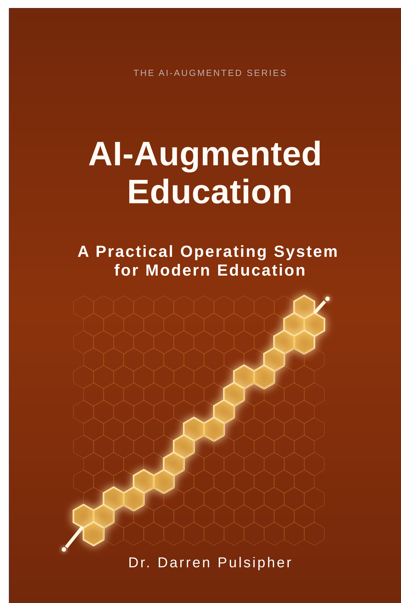

Becoming AI-Augmented
Foundational language for the individual journey and personal adoption.
Books
Read the books that support AAOS and the AI-Augmented Method, then continue into the assessment and resource library.
Foundational language for the individual journey and personal adoption.

How teams can align around shared language, governance, and practice.

Operating model thinking for broader adoption, governance, and scale.
Education series
These covers are copied from the source trees so the public site can reference them cleanly when the book set expands.

Guidance for learning, classroom design, and academic integrity in AI-enabled environments.

Institution-level framing for bringing AAOS into classrooms, programs, and policy.
The public site explains the method. Commerce and paid materials route through the broader ecosystem when appropriate.